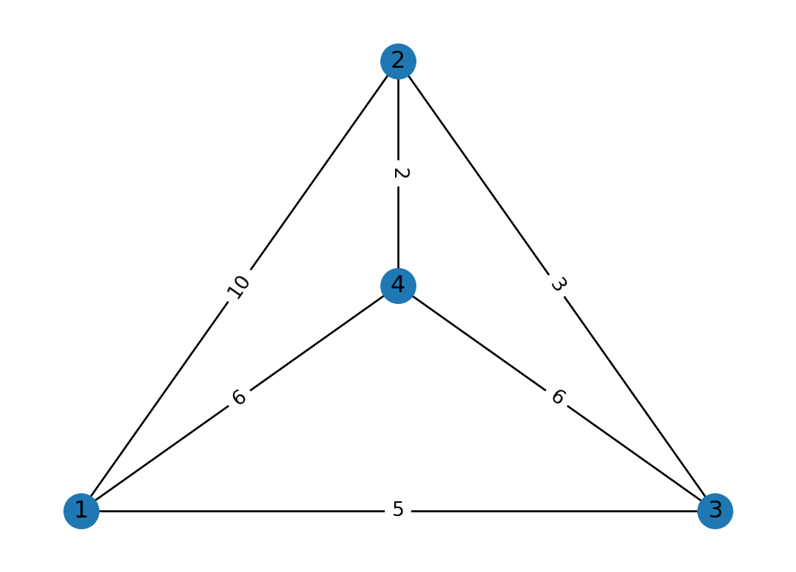
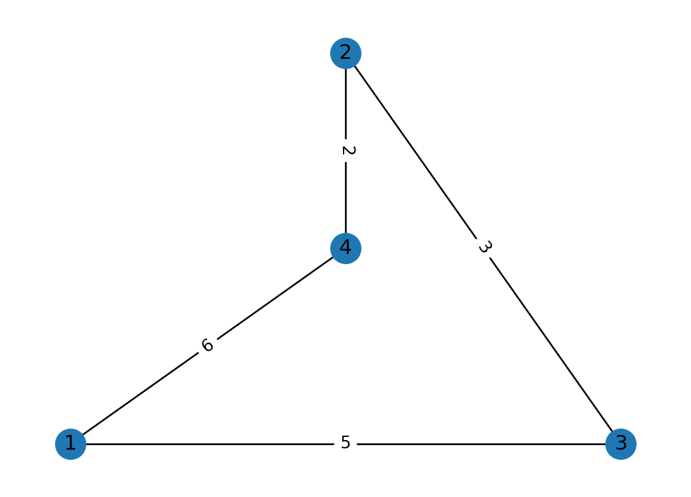
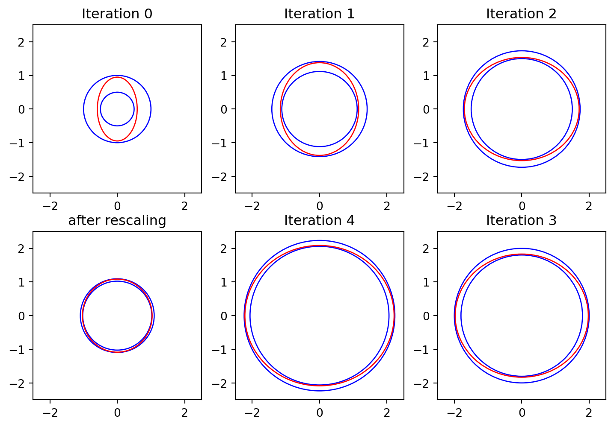
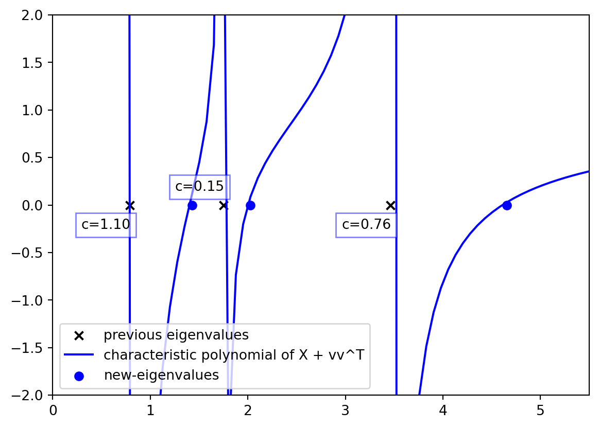
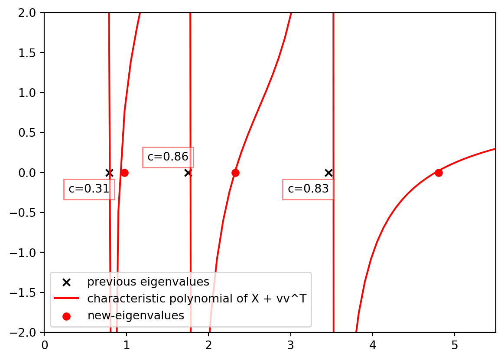
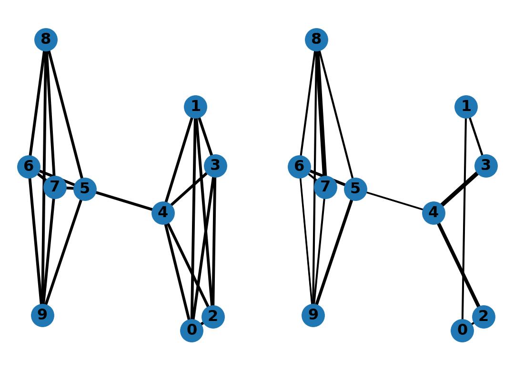
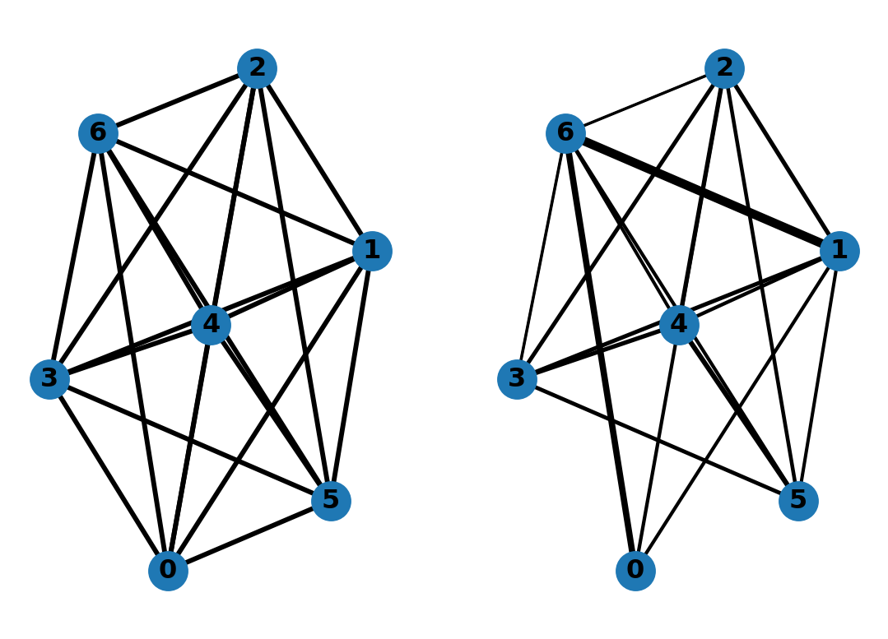

For any graph \(G\) a sparsifier \(H\) is a graph with far fewer edges that is similar to \(G\) in some useful way. While \(H\) is much easier to do computation on, it holds the same properties as \(G\), and therefore, it is a reliable way of doing approximate computation on \(G\). For example, if we are dealing with path-finding problems on a dense large graph \(G\), the set of sparsifiers used in (Chew 1989) can be used because they are guaranteed to have almost the same shortest path properties as \(G\).
For illustration, consider the following graph \(G\) with four vertices. The new graph obtained has far fewer edges but has the same set of shortest paths between any pair of vertices. This is a simple sparsifier that can be used for shortest path-finding problems and can be obtained via removing trivial edges \(w(u,v)\) such that the shortest distance between \(u\) and \(v\) is smaller than or equal to \(w(u,v)\).
Code
import networkx as nximport matplotlib.pyplot as plt# setup the graphG = nx.Graph()G.add_nodes_from([1, 2, 3, 4])G.add_edges_from([ (1, 2, {'w':10}), (1, 3, {'w':5}), (1, 4, {'w':6}), (2, 3, {'w':3}), (2, 4, {'w':2}), (3, 4, {'w':6})])# setup plotting position of all verticespos={1:(0,0),2:(0.5,1),3:(1, 0),4:(0.5, 0.5)}# a simple networkx plotting functiondef plot_graph(): nx.draw_networkx(G,pos) labels = nx.get_edge_attributes(G,'w') nx.draw_networkx_edge_labels(G,pos,edge_labels=labels) plt.axis('off') plt.show()# before:plot_graph()# find the shortest path between any pair of verticesshortest_paths =dict(nx.all_pairs_dijkstra_path(G, weight='w'))for v in shortest_paths:for u in shortest_paths[v]:# if the edge from v to u has weight greater than the shortest path# between v and u, then remove itif v != u andlen(shortest_paths[v][u]) >2:# remove edge from v to u if it existsif G.has_edge(v, u): G.remove_edge(v, u)# after:plot_graph()

(a) The graph \(G\) that we intend to sparsify.

(b) The graph \(H\) that is obtained by removing trivial edges.
Figure 1: A simple illustration of a sparsifier that can help with shortest path problems.
On the other hand, (Benczúr and Karger 1996) for example introduces the cut-sparsifiers which are a class of sparsifiers that have almost identical cut weights for any set \(S \subset V\) meaning that \(E_G(S, \bar{S}) \approx E_H(S, \bar{S})\). In this write-up, we cover spectral graph sparsifiers which are a certain class of sparsifiers that have a tight connection with expander graphs and can approximate the Laplacian of a graph with high accuracy. These sparsifiers preserve random walk properties as well and can be used as a substitute for original graphs in many applications such as recently in Graph Neural Networks (GNNs) (Li et al. 2020).
Because of the close connection between graph spectral connectivity and edge connectivity introduced by Cheeger (Cheeger 1970), spectral sparsifiers were introduced by (Spielman and Teng 2004) and (Spielman and Teng 2011) as an important tool. Conventionally, these graphs are constructed using randomized algorithms where we pick a certain edge of an original graph with a probability and sample edges until we obtain a good approximation. For example, if an edge is crucial to the connectivity of our graph, then it has high importance and should be picked with high probability. However, in this write-up, we will show that we can construct a sparsifier with a deterministic algorithm introduced in (Batson, Spielman, and Srivastava 2009) that has a tight connection with the Ramanujan bounds.
Furthermore, we will cover an important reduction from the graph sparsification problem to a matrix approximation problem which has been further exploder in many follow-up papers (Tat Lee and Sun 2015) and (Lee and Sun 2017). Moreover, this will give us the first deterministic algorithm for obtaining sparsifiers with a linear number of edges. That said, we have implemented the algorithm in Python and have tested it on a few graphs for illustration purposes and our package is available in our Github repository.
Finally, we will focus our attention on running the algorithm on complete graphs. The sparsifier obtained from the complete graph will have high connectivity which resembles similarities with the expander graphs. Although the graph obtained from the algorithm is not regular, we will show that it has a lot of expander-like properties and we will draw a close connection with Ramanujan graphs.
Recap and Preliminaries
Here we will cover some preliminaries on spectral sparsification and then we will discuss the effective resistance-based algorithm for spectral sparsification. We will also discuss an important reduction to the matrix problem which lays the groundwork for the final algorithm.
Spectral Sparsification
Before everything, we should define what a spectral sparsifier is. A spectral sparsifier is a sparse graph that approximates the Laplacian of a graph with high accuracy. In other words, a sparsifier is a graph that has a lot of the same properties as the original graph; formally,
Definition 1 A \((k, \epsilon)\)-spectral sparsifier of a graph \(G = (V, E, w)\) is a graph \(H\) with \(k\) edges such that, \[L_G \approx_\epsilon L_H : (1 - \epsilon) L_G \preceq L_H \preceq (1 + \epsilon) L_G\] where \(L_G\) is the Laplacian of \(G\) and \(L_H\) is the Laplacian of \(H\).
Reduction to the Matrix Problem
Here, we will present an analog problem for the sparsification of matrices that is tightly connected to the spectral sparsification problem. The problem is as follows:
Definition 2 \((k, \epsilon)\)-approximation of matrices Given a set of \(m\) vectors \(v_1, \ldots, v_m \in \mathbb{R}^n\) if \(A = \sum_{i=1}^m v_iv_i^T\) is a positive semi-definite matrix, then we intend to find a subset of vectors \(\mathcal{S} \subseteq \{1, \ldots, m\}\) of size \(k\) and a set of coefficients \(s_i \in \mathbb{R}^+\) such that \(\hat{A} = \sum_{i \in \mathcal{S}} s_i \cdot v_i v_i^T\) and \(A \approx_\epsilon \hat{A}\).
Now we will show that one can solve the \((k, \epsilon)\) problem in Definition 2 then plug it into the graph sparsification problem and obtain a \((k, \epsilon)\)-spectral sparsifier. To do so, observe that if we set \(A = L_G\) and \(v_{ab} = \sqrt{w_G(a,b)} (\chi_a - \chi_b)\) and \(s_{ab} = \frac{w_H(a,b)}{w_G(a,b)}\), then the problem in Definition 2 is equivalent to the spectral sparsification problem:
As alluded to previously, the problem of spectral sparsification can be approached from an edge-sampling perspective. In particular, one can assign importance weights to each edge and then come up with a sampling scheme that samples edges according to their importance. For example, an edge that is crucial for the connectivity of the graph has high importance for spectral sparsifiers. To that end, a set of edges can be independently sampled according to this scheme and after sampling each edge the graph becomes more and more similar to the original one. However, since this sampling is done according to the measure of importance, even after sampling a small number of edges, the graph always tends to be a good approximation of the original graph.
One can also formulate the same thing for the matrix approximation problem. Assume that for each vector \(i\), we have a corresponding matrix \(X_i = s_i v_i v_i^T\) which will be picked with probability \(p_i\) and we will consider \(\hat{A} = \sum_{i \in \mathcal{S}} X_i\) where \(\mathcal{S}\) is the set of indices of the sampled vectors. This directly entails the following: \[E[\hat{A}] = \sum_{i=1}^m p_i X_i\] One can bound the number of sampled vectors by coming up with good probabilities \(p_i\) such that \(E[|\mathcal{S}|] = \sum_{i=1}^m p_i\) is bounded. Bounding the error of the approximation is typically done using matrix concentration bounds. However, these algorithms tend to have the following problems:
The algorithm is not deterministic meaning that there is a very low chance of producing a large set \(\mathcal{S}\).
The algorithm is not deterministic meaning that there is a very low chance of producing an approximate \(\hat{A}\) which is not close to \(A\).
Because these algorithms rely on exponential concentration bounds, typically they require to sample \(\mathcal{O}(n \cdot polylog(n))\) vectors to achieve a good approximation – this is the greatest problem of these algorithms.
Although flawed, these solutions are easy to use and a set of sampling techniques have been proposed to tackle sparsification with the most famous among them being the effective-resistance based sparsifiers (Spielman and Srivastava 2008). We will briefly cover the main idea and intuition behind this and redirect the reader to other resources for further detailed reading.
The effective resistance between two nodes \(a\) and \(b\) is the equivalent resistance if we assume that the rest of the nodes are harmonic and only one external current is given to \(a\) and one external current is taken from \(b\); then, the measured voltage difference between these two nodes will denote the effective resistance which can be written as \((\chi_a - \chi_b)^T L^+_G (\chi_a - \chi_b)\) using Laplacians. Moreover, effective resistances have a combinatorial interpretation as well. If we assume we sample spanning trees proportional to their weight products, then the effective resistance between two nodes is proportional to the probability of the edge between those two nodes appearing. This means that a crucial edge in the connectivity, will have a high probability of appearing in the sampled spanning trees and thus will have a high effective resistance; that said, this will yield a high importance weight for that edge and thus it will be sampled more often:
Effective-resistance based sparsifier For each edge \((a, b) \in E\), sample \((a,b)\) with probability \(p(a,b) = \min\left(1, C \cdot (\log n) \epsilon^{-2} w(a,b) R_{eff}(a, b)\right)\). Where \(R_{eff}(a, b)\) is the effective resistance between \(a\) and \(b\). Using Rudelson concentration lemma (Rudelson 1999), (Spielman and Srivastava 2008) shows that for a certain constant \(C \approx 4\) after picking \(\mathcal{O}(n\log n /\epsilon)\) edges the resulting graph is a \(\epsilon\)-spectral sparsifier with high probability.
Main Method
We will now discuss the deterministic algorithm for approximating the matrix \(A\). The algorithm takes an iterative approach and follows \(N\) iterations. At each iteration, it will pick a vector \(v_i\) which corresponds to an edge and will add \(s_i v_i v_i^T\) to the current accumulated matrix. After \(k\) iterations it will give a good approximation for the matrix \(A\). But before we present the bulk of the algorithm, let’s start by laying some groundwork and presenting some useful intuitions.
Geometric interpretation
Note that for any pair of matrices \(A\) and \(B\), having the same null-space we have that \(A \succeq B \Longleftrightarrow I \succeq A^{+/2} B A^{+/2}\). Hence, \[A \approx_\epsilon B \Longleftrightarrow \Pi \approx_\epsilon A^{+/2} B A^{+/2}\] where \(\Pi = A^{+/2} A A^{+/2}\) is the identity in the subspace orthogonal to the null space of \(A\) and is an idempotent matrix. In other words, \(\Pi^2 = \Pi\). Therefore, without loss of generality, we may assume that \(A\) in Definition 2 is an idempotent matrix \(\Pi\) via the transformation described where \(A\) is replaced by \(A^{+/2} A A^{+/2}\) and \(v_i = A^{+/2} v_i\) for all \(1 \le i \le m\).
With that in mind, thinking about idempotent matrices yields nice intuitions on how to think about the problem geometrically. Furthermore, for any positive semi-definite matrix \(M\) we can define an ellipsoid \(\{x | x^T M x = 1\}\) and for \(M = \Pi\) being an idempotent matrix the ellipsoid corresponds to the sphere in the linearly transformed subspace of \(\Pi\): \[x^T \Pi x = x^T \Pi \Pi x = ||\Pi x||_2^2 = 1.\]
Therefore, if we consider everything in the mapped subspace, i.e., replacing every vector \(x\) with \(\Pi x\) automatically, then we want to find a linear combination of their cross product such that the ellipsoid corresponding to that combination approximates a regular spherical shape. In other words, \[\begin{align*}
&A \approx_\epsilon \sum s_i v_i v_i^T = \hat{A} \\
\Longleftrightarrow & ~ \Pi = A^{+/2} A A^{+/2} \approx_\epsilon \sum s_i (A^{+/2}) v_i (A^{+/2} v_i)^T = \hat{\Pi}\\
\Longleftrightarrow & ~ (1 - \epsilon) \Pi \preceq \hat{\Pi} \preceq (1 + \epsilon) \Pi \\
\Longleftrightarrow & ~ \forall x : (1 - \epsilon) ||\Pi x||_2^2 \le [\Pi x]^T \hat{\Pi} [\Pi x] \le (1 + \epsilon) ||\Pi x||_2^2 \\
\end{align*}\]
Therefore, the ellipsoid projected using \(\Pi\) is sandwiched between two spheres off by \(\epsilon\) in their radius. In turn, the algorithm takes an iterative approach to solve this geometric problem and instead of approximating matrix \(A\), it tries to approximate the matrix \(\Pi\) and then obtains \(\hat{A}\) by \(A^{1/2} \hat{\Pi} A^{1/2}\). It first starts off with \(X^{(0)} = \emptyset\) and then iteratively picks a vector \(v_i\) and assigns a weight \(s_i\) to it such that the ellipsoid \(X^{(i+1)} = X^{(i)} + s_i v_i v_i^T\) becomes iteratively more like a sphere (for example, by pushing on the directions that are more contracted).
To formalize the algorithm, it always bounds \(X^{(i)}\) the corresponding ellipsoid between two spheres of radius \(l^{(i)}\) and \(u^{(i)}\). At each iteration, the lower bound \(l^{(i)}\) will be increased by some \(\delta_l\) and the lower bound \(u^{(i)}\) will be increased by some \(\delta_u\) and the algorithm will try to find a vector \(v_i\) and a weight \(s_i\) such that the new ellipsoid \(\hat{A}^{(i+1)}\) stays sandwiched between \(l^{(i+1)} = l^{(i)} + \delta_l\) and \(u^{(i+1)} = u^{(i)} + \delta_u\). Moreover, a key idea here is to cleverly pick \(\delta_l\) and \(\delta_u\) values such that after \(k\) iterations the gap between the two spheres is close and the ratio of their radius is off by at most \(\epsilon\). In other words, the following should hold: \[\frac{u^{(0)} + k \delta_u}{l^{(k)} + k \delta_l} = \frac{u^{(k)}}{l^{(k)}} \le \frac{1 + \epsilon}{1 - \epsilon}.\] This will ensure that the shape of the ellipsoid becomes more and more spherical as the algorithm progresses, and finally, a simple scaling on \(X^{(N)}\) will yield an approximate unit sphere \(\hat{P}\) which approximates \(\Pi\).
For illustration, Figure 2 shows the algorithm in action. The algorithm starts with an initial ellipsoid that is not spherical and then iteratively picks a vector \(v_i\) and a weight \(s_i\) such that it remains sandwiched between the two spheres. Note that in this example \(\delta_l\) and \(\delta_u\) are equal (but this is not the case for the final algorithm), therefore, for a large enough \(k\) the ellipsoid will become more and more spherical because their radius grows while the gap between them remains constant.
Code
import numpy as npimport matplotlib.pyplot as pltfrom matplotlib.patches import Ellipseimport random # set a seed for reproducibilityrandom.seed(42)# a function to plot an ellipsedef plot_ellipse(ax, A, color, alpha):iflen(A.shape) ==1: A = np.diag(A) w, v = np.linalg.eig(A) w = np.sqrt(w) ell = Ellipse( xy = (0, 0), width =2* w[0], height =2* w[1], angle = np.rad2deg(np.arccos(v[0, 0])), color = color, alpha = alpha )# plot the ellipse no fill ell.set_facecolor('none') ax.add_artist(ell)level =6eps =1e-1# create 6 plots in a 2 by 3 gridfig, axs = plt.subplots(2, 3, figsize=(9, 6))lower_ellipse = np.array([0.25, 0.25])upper_ellipse = np.array([1, 1])middle_ellipse = np.array([0.25+ eps, 1-eps])for i inrange(level):# get the axs object ax = axs[i //3, i %3] if i //3==0else axs[i //3, 2- i %3] ax.set_title(f'Iteration {i}'if i < level -1else'after rescaling') ax.set_xlim(-2.5, 2.5) ax.set_ylim(-2.5, 2.5) ax.set_aspect('equal') plot_ellipse(ax, lower_ellipse, 'blue', 1) plot_ellipse(ax, upper_ellipse, 'blue', 1) plot_ellipse(ax, middle_ellipse, 'red', 1) lower_ellipse += np.array([1, 1]) upper_ellipse += np.array([1, 1])# flip a coin to decide which direction to pushif random.random() >0.5: middle_ellipse[0] = lower_ellipse[0] + eps middle_ellipse[1] = upper_ellipse[1] - epselse: middle_ellipse[0] = upper_ellipse[0] - eps middle_ellipse[1] = lower_ellipse[1] + epsif i == level -2:# do rescaling lower_ellipse = lower_ellipse / (level -1.0) upper_ellipse = upper_ellipse / (level -1.0) middle_ellipse = middle_ellipse / (level -1.0)plt.show()

Figure 2: The geometric intuition behind the algorithm.
Physical View and the Expected behavior
The fact that \(X^{(i)}\) should be bounded between two spheres translates into all the eigenvalues of \(X^{(i)}\) being bounded between the two radiuses except for the trivial eigenvalues that their corresponding eigenvector is in the null-space of \(\Pi\). For Laplacians, this corresponds to the all one’s vector which is in the null-space of \(L_G\) and \(\Pi = L_G^{+/2} L_G L_G^{+/2}\). For simplicity, we assume that all the matrices are full rank and \(\Pi = I\). Using this, we can establish theories that easily generalize to the case where \(\Pi\) is not the identity matrix via projection.
An important observation is to monitor what happens to the eigenvalues of \(X^{(i)}\) when \(vv^T\) is being added at each iteration. To do so, we consider the characteristic polynomial of \(X\) at each iteration written as \(p_X(\lambda) = \det(\lambda I - X)\). There are two important lemmas when analyzing \(A + vv^T\) matrices, one is the Sherman-Morrison lemma which states that:
Lemma 1 Suppose \(A\) is an invertible square matrix and \(u, v\) are column vectors. Then \(A + uv^T\) is invertible iff \(1 + v^T A^{-1} u \neq 0\). In this case, \[(A + uv^T)^{-1} = A^{-1} - \frac{A^{-1}uv^TA^{-1}}{1 + v^TA^{-1}u}\]
The other is the matrix determinant lemma which states that:
Lemma 2 Suppose \(A\) is an invertible square matrix and \(u, v\) are column vectors. Then \[\det(A + uv^T) = \det(A) (1 + v^T A^{-1} u)\]
Moreover, plugging these into the characteristic polynomial of \(X + vv^T\) yields the following:
\[\begin{align*}
p_{X + vv^T}(\lambda) &= \det(\lambda I - X - vv^T) \\
& = \det(\lambda I - X) (1 - v^T \left(\lambda I - X \right)^{-1}u) \\
& = \det (\lambda I - X) \left(1 - v^T \left[\sum_{i=1}^n \frac{1}{\lambda - \lambda_i} u_i u_i^T\right] v\right)\\
& = p_X(\lambda) \left(1 - \sum_{i=1}^n \frac{(v^Tu_i)^2}{\lambda - \lambda_i}\right)\\
\end{align*}\]
Furthermore, we can assume particles being set on certain points of the \(x\)-axis with the \(i\)th one on \(\lambda_i\) having a charge equal to \((v^Tu_i)^2\). The new set of equilibrium points for this particle set will entail the new eigenvalues of \(X + vv^T\) which are the roots of \(p_{X + vv^T}(\lambda)\). Note that for \(u_i\) values such that \(v^Tu_i=0\) the charge is zero and therefore, the new eigenvalues will be the same as the old ones.
The following figure illustrates the matrix case \(X\) with three different vectors \(v_1\), \(v_2\) and \(v_3\). Each color corresponds to the characteristic polynomial for different \(v\) values where,
\[X = \lambda_1 u_1 u_1^T + \lambda_2 u_2 u_2^T + \lambda_3 u_3 u_3^T
= \begin{bmatrix}
1.6 & -0.2 & -0.33\\
-0.2 & 3.4 & -0.33\\
-0.33 & -0.33 & 1
\end{bmatrix}\]\[\begin{bmatrix}\lambda_1 \\ \lambda_2 \\ \lambda_3\end{bmatrix} = \begin{bmatrix}0.79 \\ 1.75 \\ 3.46\end{bmatrix}, u_1 = \begin{bmatrix}
-0.41\\
-0.15\\
-0.9
\end{bmatrix}, u_2 = \begin{bmatrix}
-0.9 \\
-0.03 \\
0.42
\end{bmatrix}, u_3 = \begin{bmatrix}
0.08\\
-0.99\\
0.12\\
\end{bmatrix}\] We note that \(\langle v_i, u_j \rangle^2\) is the charge of particle \(j\) when adding \(v_i\) to \(X\) and we can summarize all the charged particles in the following matrix: \[v_1 = \begin{bmatrix}
0\\
1\\
1\\
\end{bmatrix}, v_2 = \begin{bmatrix}
1\\
1\\
0\\
\end{bmatrix},
C = \begin{bmatrix}
1.10 & 0.15 & 0.75\\
0.31 & 0.87 & 0.82
\end{bmatrix}, C_{ij} = \langle v_i, u_j \rangle^2\]
Code
import numpy as npimport matplotlib.pyplot as pltdef plot_characteristic_polynomial(w, u, v, color): x = np.linspace(-25, 50, 1000)# plot the determinant of xI - (X + vv^T)# for X = u w u^T y = [] roots = [] prv =0for i in x: val =1- np.sum(1/(i - w) * (v @ u)**2)if prv <0and val >0: roots.append(i) prv = val y.append(val) plt.plot(x, y, color = color, \ label='characteristic polynomial of X + vv^T') plt.scatter(roots, np.zeros(len(roots)), color = color,\ marker ='o', label='new-eigenvalues')# create an orthonormal 3 by 3 matrix UU = np.array([[-0.41, -0.15, -0.9], [-0.9, -0.03, 0.42], [0.08, -0.99, 0.12]]).Tw = np.array([0.79, 1.75, 3.46])A = U @ np.diag(w) @ U.Tvz = [[0, 1, 1], [1, 1, 0]]# plot two different graphscolors = ['blue', 'red']for col, v inzip(colors, vz): plt.scatter(w, np.zeros(w.shape), color ='black', \ marker ='x', label='previous eigenvalues')# add text with textbox equal to np.sum(w)# on top of each eigenvaluefor i, wi inenumerate(w): t = plt.text(wi -0.5, 0.1* (4* (i %2) -2.5), \f"c={(v @ U[:,i])**2:.2f}", color ='black') t.set_bbox(dict(facecolor='white', alpha=0.5, \ edgecolor=col)) plot_characteristic_polynomial(w, U, v, col) plt.xlim(0, 5.5) plt.ylim(-2, 2) plt.legend() plt.show()

(a) The characteristic polynomial after adding \(v_1\) to X.

(b) The characteristic polynomial after adding \(v_2\) to X.
Figure 3: The characteristic polynomial of \(X + vv^T\) for different \(v\) values, the higher the charge the more it will repel the new eigenvalues from the old ones.
The goal is to pick a \(v\) such that the particles are set in a way that all the eigenvalues are uniformly pushed forward so that they can stay between the new ranges \(l^{(i+1)}\) and \(u^{(i+1)}\). To get a sense, let’s pick one of the \(m\) vectors with uniform probability and add it to \(X\). In that case, the expected charges can be written as: \[E[\langle v, u_j \rangle^2] = \frac{1}{m} \sum_{i=1}^m \langle v_i, u_j \rangle^2 = \frac{1}{m} u_j^T \left( \sum_{i=1}^m v_i v_i^T \right)u_j = \frac{||\Pi u_j||_2^2}{m} = \frac{1}{m}\] Hence, on expectation, all the particles have a charge of \(1/m\) and the expected deterministic polynomial is:
Therefore, if we start with the matrix \(p_{X^{(0)}}(\lambda) = \lambda^n\), after \(nd\) iterations the expected polynomial is a set of associate Laguerre polynomials that are well studied (Dette and Studden 1995), and in particular, it has been proven that the ratio between the largest and smallest root for these polynomials is bounded by the value below:
Although this is just speculation and no \(v_i\) values will necessarily exist with the expected behavior, we can still get an idea of the goal \(\epsilon\) and come up with the following proposition:
Proposition 1 For any matrix \(A = \sum_{i=1}^m v_i v_i^T\) we can choose a subset \(\mathcal{S}\) of \(v_i\) and a set of coefficients \(s_i\) with size \(nd\) such that: \[\hat{A} = \sum_{i \in \mathcal{S}} s_i \cdot v_i v_i^T,~~ (1 - \frac{2\sqrt{d}}{d+1}) A \preceq \hat{A} \preceq (1 + \frac{2\sqrt{d}}{d+1}) A\]
The graph formulation of Proposition 1 is as follows:
Corollary 1 For any graph \(G\) and any \(\epsilon\) we can choose a subset of \(\mathcal{O}(n/\epsilon^2)\) edges with arbitrary edge weights to obtain \(H\) such that \(H\) is an \(\epsilon\)-sparsifier of \(G\): \(L_G \approx_\epsilon L_H\).
This is set using \(\epsilon = \frac{2\sqrt{d}}{d + 1}\) where \(\frac{n}{\epsilon^2} = \mathcal{O}(nd)\). In the next section, we will see how we can choose \(v_i\) and \(s_i\) at each step such that after \(nd\) iterations this happens.
Potential Functions
The big question is, how can we quantize the boundedness of the matrix \(X\) at each step? We want \(X^{(i)}\) to have eigenvalues that are bounded by \(l^{(i+1)}\) and \(u^{(i+1)}\); and so, we use a family of potential functions that explode when the eigenvalues approach the bounds. A set of such potentials can be chosen using the fact that \(uI - X\) or \(A - lX\) will have infinitely small eigenvalues when the eigenvalues of \(X\) approach \(u\) or \(l\) respectively; therefore, their inverse will be ill-conditioned and have infinitely large eigenvalues. We can use the following potential functions:
In summary, the main idea is to choose \(v_i\) and \(s_i\) such that the potential for the matrix \(X^{(i)}\) in the next iteration does not explode. To do so, we can ensure that the potentials remain monotonically decreasing:
With that in mind, let’s assume we are going to assign \(s_k\) to any vector \(v_k\) such that after the increase in our upper and lower bound, the potential remains non-increasing. Now let us separately consider the upper and lower bound potentials.
When increasing \(l^{(i)}\), the eigenvalues come closer to the lower bound, and hence, the potential of the lower bound will increase; therefore, for any vector \(v_k\), the coefficient \(s_k\) should be bounded by some value \(L_{X^{(i)}}(v_k)\) such that after adding \(s_k \cdot v_k v_k^T\) to \(X^{(i)}\), spectrum shifts forward and the increase in the potential cancels out. That said, for any matrix \(X\) and any vector \(v\) we have:
\[\begin{align*}
&\Phi^{\overset{l'}{\overbrace{l + \delta_l}}}(X + s \cdot vv^T) \le \Phi^l(X)\\
\Phi_{l'}(X + s \cdot vv^T) & = Tr(X + s \cdot vv^T - l'I)^{-1} \qquad \text{Sherman-Morrison}\\
& = Tr\left((X - l'I)^{-1}\right) + Tr\left(\frac{s \cdot (X - l'I)^{-1} v v^T (X - l'I)^{-1}}{1 + s \cdot v^T (X - l' I)^{-1} v}\right)\\
&= \Phi_{l'}(X) - \frac{s \cdot v^T (X - l'I)^{-2}v}{1 + s \cdot v^T (X - l'I)^{-1}v} \le \Phi^l(X)
\end{align*}\]
\[\begin{equation} \tag{1}\label{eq:lower-bound-potential}
s \ge L_X(v) = \frac{\Delta}{v^T \left((X - l' I)^{-2} - \Delta (X - l' I)^{-1} \right) v}
\end{equation}\]
On the other hand, a similar thing can be said for the upper-bound potential. when increasing \(u^{(i)}\), the eigenvalues are further away from the upper bound which gives us the freedom to shift the eigenvalues forward. However, this shifting should not be so extreme that the potential at most increases to offset the decrease introduced after adding \(\delta_u\) to \(u^{(i)}\): \[
\Phi^{\overset{u'}{\overbrace{u + \delta_u}}}(A + s \cdot vv^T) \le \Phi^u(A).
\] Similar to \(\eqref{eq:lower-bound-potential}\), if we negate \(s\) and \(A\) then the upper-bound potential will act similarly to the lower-bound potential. Therefore, we can write the following:
\[\begin{equation} \tag{2}\label{eq:upper-bound-potential}
s \le U_X(v) = \frac{\Delta}{v^T \left((u' I - X)^{-2} - \Delta (u' I - X)^{-1}\right)v}
\end{equation}\]
Where \(\Delta\) is the difference between \(\Phi^u(X)\) and \(\Phi^{u'}(X)\).
Finally, for every vector \(v_i\) at each step, we can introduce an upper and lower bound for the coefficient corresponding to that vector. However, this is not enough to ensure that at least one \(v_i\) exists such that \(L_X(v_i) \le U_X(v_i)\); in other words, it might be the case that for each vector the upper and lower bounds are contradictory which will put the algorithm in a stale-mate state. To avoid this, we pick the values \(\delta_u\) and \(\delta_l\) carefully and introduce a nice lemma in the next section that ensures such a vector always exists.
The Existence of a good Vector
We will now present the following lemma, that for the potentials having a certain condition, a good vector \(v_k\) and a good coefficient \(s_k\) always exist. This is the meat and bones of the algorithm:
Lemma 3 For any set of vectors \(\langle v_1, v_2, ..., v_m \rangle\) that sum up to an idempotent matrix \(\Pi = \sum v_i v_i^T\) and a matrix \(X\) being an arbitrary linear combination of their rank one cross product, if \(\Phi^u(X) \le \epsilon_U\) and \(\Phi_l(X) \le \epsilon_L\) and \(\epsilon_u, \epsilon_l, \delta_u, \delta_l\) satisfy the following conditions: \[0 \le \delta_u^{-1} + \epsilon_u \le \delta_l^{-1} - \epsilon_l,\] Then, there exists a vector \(v_k\) such that: \[L_X(v_k) \le U_X(v_k)\] , and hence, by adding \(s \cdot v_k v_k^T\) to \(X\) for \(s \in [L_A(v_k), U_A(v_k)]\), we can ensure that \(\Phi^{u + \delta_u}(X + s \cdot v_k v_k^T) \le \Phi^{u}(X)\) and \(\Phi_{l + \delta_l}(X + s \cdot v_k v_k^T) \le \Phi_l(X)\).
Solution. The proof idea is to show that the sum of all the lower bound values for all the vectors \(v_k\) is less than or equal to the sum of all the upper bounds for all vectors \(v_k\). In other words, \[\sum_{k=1}^m L_X(v_k) \le \sum_{k=1}^m U_X(v_k)\] The proof in (Batson, Spielman, and Srivastava 2009) shows that the left-hand-side is bounded by \(\frac{1}{\delta_l^{-1} - \epsilon_l}\) and the right-hand-side is bounded by \(\frac{1}{\delta_u^{-1} + \epsilon_u}\). Therefore, the lemma is proven using the conditions mentioned.
To show these two bounds, a lot of algebra is required. The proof is hidden here for brevity but you can check out the proof of Lemma 3.5 and Claim 3.6 in (Batson, Spielman, and Srivastava 2009) for more details; although, they have used a different notation and instead of bounding \(s_k\) values they bound their reciprocals.
Now we should pick values that adhere to the conditions: \[\delta_l = 1, \delta_u = \frac{\sqrt{d} + 1}{ \sqrt{d} - 1}, l^{(0)} = -n \sqrt{d}, u^{(0)} = \frac{n(d+\sqrt{d})}{(\sqrt{d} -1)}\]
Note that in this case, in the first step (starting off with \(X^{(0)} = 0\)), the upper and lower potentials are upper-bounded as follows: \[\Phi^u(X^{(0)}) = Tr(u^{(0)}I)^{-1} = \frac{n}{u^{0}} = \frac{\sqrt{d} - 1}{\sqrt{d} + d} = \epsilon_u\]\[\Phi_l(X^{(0)}) = Tr(-l^{(0)} I)^{-1} = \frac{n}{l^{0}} = \frac{1}{\sqrt{d}} = \epsilon_l\]
Hence, if we plug in the criteria we have, \[
0 \le
\frac{d-1}{d + \sqrt{d}} = \underset{\delta_u^{-1}}{\underbrace{\frac{\sqrt{d} - 1}{\sqrt{d} + 1}}} + \underset{\epsilon_u}{\underbrace{\frac{\sqrt{d}-1}{\sqrt{d}+d}}} = \underset{\delta_l^{-1}}{\underbrace{1}} - \underset{\epsilon_l}{\underbrace{\frac{1}{\sqrt{d}}}} = \frac{\sqrt{d} - 1}{\sqrt{d}}
\] which is satisfactory.
Finally, we know that after \(nd\) iterations \(X^{(nd)}\) will be bounded between the two following spheres:
Then by rescaling both sides of the equations by \(\gamma = \frac{\sqrt{d} - 1}{n(d+1)\sqrt{d}}\), we have that,
\[\begin{equation} \tag{3} \label{eq:rescaling}
(1 - \frac{2\sqrt{d}}{d+1}) I \preceq \gamma \cdot X^{(nd)} \preceq (1 + \frac{2\sqrt{d}}{d+1}) I
\end{equation}\] If we multiply both sides with \(A^{+/2}\) and setting \(\epsilon = \frac{2\sqrt{d}}{d + 1}\), we get that, \[
(1 - \epsilon) A \preceq \gamma \cdot A^{1/2} X^{(nd)} A^{1/2} \preceq (1 + \epsilon) A
\] In turn, \(A^{1/2} X^{(nd)} A^{1/2}\) would give us the Laplacian \(L_H\) in the original problem.
The Deterministic Algorithm
Now that we have a general sense of the algorithm, we can do a recap of what the algorithm does:
We will first map each edge to a vector \(v_e = \sqrt{w_e} L_G^{+/2} (\chi_{e_1} - \chi_{e_2})\) where \(w_e\) is the weight of the edge and \(\chi_{e_i}\) is the indicator vector of the vertex \(e_i\).
We start with the all-zeros matrix \(X\) which is intended to approximate the spherically shaped idempotent matrix \(\Pi = L_G^{+/2} L_G L_G^{+/2}\).
To do so, we run \(nd\) iterations and pick an edge corresponding to a vector \(v_i\) in each iteration such that the potentials remain monotonically non-increasing.
For that, we compute the lower and upper bounds for the coefficients. For all the potential computations, we consider the edges in the \(n-1\)-dimensional subspace after applying \(L_G^{+/2}\) to both sides.
We pick a vector \(v_i\) such that the lower bound for that vector is less than the upper bound and pick a coefficient between those two bounds.
We add \(X\) with \(s \cdot v_i v_i\) each step to get a large spherical matrix \(X^{(nd)}\).
Finally we multiply \(L_G^{1/2}\) to both sides of \(X^{(nd)}\) and do a rescale to obtain the Laplacian \(L_H\).
Complexity Analysis For analyzing the time complexity, we note that the reduction takes \(\mathcal{O}(n^3)\) times to compute \(L^{+/2}\) and \(\mathcal{O}(m \cdot n^2)\) to compute \(v_i = \sqrt{w_i} L_G^{+/2} L_i\). Then, the algorithm takes \(\mathcal{O}(nd)\) time to run the iterations and at each iteration upper bound and lower bound values should be computed for all vectors \(v_i\). To compute these upper and lower bounds, recall that in both \(\eqref{eq:upper-bound-potential}\) and \(\eqref{eq:lower-bound-potential}\) we need to compute the inverse of \(uI - X^{(i)}\) and \(X^{(i)} - l I\). As a precompute step, we calculate both of them using \(\mathcal{O}(n^3)\) algorithm and then compute every upper and lower bound by \(m \times \mathcal{O}(n^2)\) operations for finding the quadratic form. Therefore, the total time complexity of the algorithm is \(\mathcal{O}(n^3 + m \cdot n^2 + nd \cdot m \cdot n^2) = \mathcal{O}(m n^3 d)\). Although the algorithm is not fast in particular, it is the first approach that gives near-linear edge counts. Other follow-up works have produced faster results with (Tat Lee and Sun 2015) giving an almost linear algorithm to find almost linear sparsifiers.
Experimental Details
We implemented the algorithm in Python and tested it on a set of graphs. Our package is available here and Figure 4 demonstrates the results of the algorithm on a barbell graph.
Code
# preliminariy steps to include the packageimport sysimport mathimport networkx as nxsys.path.append('..')# importing the packagefrom src.TwiceRamanujan import TwiceRamanujan# get the laplacian of a barbell graphgraphs = [nx.barbell_graph(5,0), nx.complete_graph(7)]ds = [2, 3]for g, d inzip(graphs, ds):# calculate epsilon according to d eps =2* math.sqrt(d) / (d +1)# setup a twice-Ramanujan solver on the graph with d = 2 tr = TwiceRamanujan(g, d=d, verbose=1) sparsified_laplacian = tr.sparsify()# draw both graphs tr.juxtapose()# verify tr.verify(eps=eps)

(a) Checking the algorithm on a barbell graph.
eps = 2sqrt(d)/(d+1) = 0.9428
LHS (1 - eps) * L_G <= L_H : we check the minimum eigenvalue of the difference:
Min eigenvalue of [L_H - (1 - eps) L_G] = 0.00 >= 0
RHS L_H <= (1 + eps) * L_G : we check the minimum eigenvalue of the difference:
Min eigenvalue of [(1 + eps) L_G - L_H] = 0.00 >= 0

(b) Checking the algorithm on a complete graph.
eps = 2sqrt(d)/(d+1) = 0.8660
LHS (1 - eps) * L_G <= L_H : we check the minimum eigenvalue of the difference:
Min eigenvalue of [L_H - (1 - eps) L_G] = -0.00 >= 0
RHS L_H <= (1 + eps) * L_G : we check the minimum eigenvalue of the difference:
Min eigenvalue of [(1 + eps) L_G - L_H] = 0.00 >= 0
Figure 4: The Twice-Ramanujan sparsifier in action edges with more strength correspond to larger weights.
There were some subtleties in the implementation when numerical issues were encountered. For example, in the algorithm, we need to compute the inverse of \(uI - X^{(i)}\) and \(X^{(i)} - l I\) for the upper and lower bound values. This introduced a lot of accuracy issues, to circumvent this, we also implemented a binary search-based implementation to find the upper and lower bound for each vector \(v_i\); this turned out to be far superior although it impeded the runtime. You can simply trigger this mode by setting fast=True in the constructor of TwiceRamanujan class.
Sparsification of Complete Graphs
Now that we have illustrated the algorithm in its entirety, we will consider the case of running this sparsifier on the complete graph, after all, the whole reason behind this naming is its resemblance to the Ramanujan expanders. But first, let’s recap expanders and some of their properties and then we will see how the sparsifier shares a lot of these properties.
Expander Graphs
In literature, expander graphs are regular graphs that have high connectivity; in other words, any random walk on such a graph expands fast. In many applications like connected computing elements or communication networks, such highly connected components are required, but it is always desirable that high connectivity is achieved with sparse constructions. For example, the complete graphs are an extreme case of highly connected graphs but are not sparse. Strictly defined, the expanders are the family of graphs that keep on expanding with high connectivity but with a sparse number of edges.
Different definitions of expanders are defined using metrics such as vertex expansion, edge expansion and spectral expansion; we will only consider the case of spectral expansion here. A definition of \((d, \epsilon)\)-spectral expanders with a tight connection to the sparsifiers is given below:
Definition 3 A \(d\)-regular graph \(G\) is a \((d, \epsilon)\)-spectral expander if it approximate the complete graph \(K_n\) in a spectral sense, in other words, \[(1 - \epsilon) L_{K_n} \preceq \frac{n}{d} L_G \preceq (1 + \epsilon) L_{K_n}\]
Expander Mixing Properties
A well-known theorem in the literature is the expander mixing lemma, which states that the edges of a spectral expander are distributed uniformly across the graph. This is a very important property of the expanders, as it allows us to use the sparsifiers to approximate the complete graph. The expander mixing lemma is given below:
Theorem 1 (Expander Mixing Lemma) Let \(G\) be a \((d, \epsilon)\)-spectral expander. Then for any two disjoint sets \(S\) and \(T\) of vertices, we have, \[|E_G(S, T) - \frac{d}{n} |S| \cdot |T| | \le \epsilon \sqrt{|S| \cdot |T|}\]
This means that if we multiply the edges of an expander by \(n/d\) so that it becomes a sparsifier of the complete graph and call it \(H\), then the following holds: \[|E_H(S, T) - |S| \cdot |T|| \le \epsilon \frac{n}{d} \cdot \sqrt{|S| \cdot |T|}\]
That said, even though twice Ramanujan sparsifiers are not expanders (they are not regular) we have the following lemma for spectral sparsifiers that bear resemblance to the expander mixing lemma:
Theorem 2 Let \(L_H(V,E,w)\) be a graph that \((1+\epsilon)\) approximates the complete graph \(L_G\) then for every pair of disjoint sets S and T, \[
|E(S,T)-(1+\epsilon/2)|S||T||\leq n(\epsilon/2) \sqrt{|d||n|}
\]
Solution. Through the definition we have \[
-\frac{\epsilon}{2} L_G \preceq L_H-(1+\epsilon/2)L_G \preceq \frac{\epsilon}{2} L_G
\]
So it is possible to write it as \[
L_H=(1+\epsilon/2)L_G+X_M
\] where \(X_M\) is calculated based on norms with it having max norm as \(\frac{\epsilon}{2} ||L_G|| \leq n\epsilon/2\) Now consider \(x\) and \(y\) as characteristic vectors of set \(S\) and \(T\) respectively. As we know \(-E(S,T) = x^TL_Hy\) we will get the weight crossing the two sets. And we consider with a complete graph, the weight is uniformly distributed \[x^TL_Gy= -|S||T|\] Substituting back \[x^TL_Hy = (1+\frac{\epsilon}{2}x^TL_Gy+x^TX_my)\]\[x^TL_Hy = (1+\frac{\epsilon}{2}|S||T|+x^TX_my)\]\[-(E(S,T) -(1+\frac{\epsilon}{2}|S||T|)= x^TX_my)\] Taking modulus on both sides \[|E(S,T) -(1+\frac{\epsilon}{2})|S||T||= |x^TX_my|\] Consider RHS and apply the Cauchy-Schwarz inequality \[|x^TX_my|\leq||X_m||\:||x||\:||y||\leq n\frac{\epsilon}{2}\sqrt{|S||T|}\] Substituting back \[|E(S,T) -(1+\frac{\epsilon}{2})| \leq n\frac{\epsilon}{2}\sqrt{|S||T|}\]
That said, the twice Ramanujan can be a good approximate for the complete graph and any vertex set will expand. Now let’s move on to Ramanujan bounds.
Ramanujan Bounds
For expanders, we know that the higher \(d\) the more freedom we have to choose more dense graphs that give us better approximations resulting in lower values of \(\epsilon\). That said, given a specific value of \(d\), there exist some lower bounds on the accuracy metric \(\epsilon\). Intuitively, the lower the value of \(d\), the worst the accuracy gets and \(\epsilon\) should increase. The Alan-Bopanna lemma bridges that gap between these two concepts and states a lower limit for the second eigenvalue for the Laplacians of \(d\)-regular graphs: \[
\lambda_i \geq 2\sqrt{d-1} − o_n(1),
\] and a connected \(d\)-regular graph obtaining this bound is called a Ramanujan graph. Alternatively, the lemma can produce a bound on the accuracy metric \(\epsilon\) as follows: \[\frac{1 + \epsilon}{1 - \epsilon} \ge 1 + \frac{4}{\sqrt{d}} + o_n(1/d)\] Therefore, Ramanujan graphs are the best-known expanders for a given value of \(d\). Following the theme of drawing connections between sparsification and expanders, we can also prove a lower bound for the accuracy metric \(\epsilon\). With this bound, we can get a sense of how well a sparsification algorithm acts.
Theorem 3 If \(H\) is a graph that \(\epsilon\)-approximates the graph \(G\) such that \(L_H \approx_\epsilon L_G\), then we have, \[\frac{1 + \epsilon}{1 - \epsilon} \ge 1 + \frac{2}{\sqrt{d}} - \mathcal{O}\left( \frac{\sqrt{d}}{n} \right)\] if \(H\) contains a vertex of degree \(d\).
Solution. The key aspect of the proof is the fact that if we consider the Rayleigh coefficient ratio of \(L_H\) for two different vectors, which are orthogonal to all 1 vector, it can be at max \(\kappa = \frac{1 + \epsilon}{1 - \epsilon}\) due to sparsifier definition.
Now for the construction, consider the d-degree vertex, let it be \(v_0\), and its neighbors are \(v_1 ....v_n\). Now let the weight of the edge connecting that neighbor to the \(v_0\) be \(w_i\) and the weight to all the rest of vertices excluding \(v_0\) neighbors be \(\delta_i\).
\[ y(v_i)=\begin {cases}
1 & v_i\in v_0 \\
-\frac{1}{\sqrt{d}} & v_i\in {v_1,...v_d} \\
0 & v_i\notin {v_0,v_1...v_d}
\end{cases}
\] Now taking quadratic forms concerning these and using the edge definition of laplacian \[
x^TL_Hx = \sum^{d}_{i=1}w_i(1-1/\sqrt(d))^2+\sum^d_{i=1}\delta_i(1/\sqrt(d)-0)^2
\]\[
= \sum^{d}_{i=1}w_i+\sum^{d}_{i=1}\frac{\delta_i+w_i}{d}-2\sum^d_{i=1}\frac{w_i}{\sqrt{d}}
\]
Similarly for y \[
y^TL_Hy = \sum^{d}_{i=1}w_i+\sum^{d}_{i=1}\frac{\delta_i+w_i}{d}+2\sum^d_{i=1}\frac{w_i}{\sqrt{d}}
\] Now taking ratio \[\frac{y^TL_Hy}{x^TL_Hx}=\frac{1+\frac{1}{\sqrt{d}}\frac{2\sum^d_{i=1}w_i}{\sum^{d}_{i=1}w_i+\sum^{d}_{i=1}\frac{\delta_i+w_i}{d}}}{1-\frac{1}{\sqrt{d}}\frac{2\sum^d_{i=1}w_i}{\sum^{d}_{i=1}w_i+\sum^{d}_{i=1}\frac{\delta_i+w_i}{d}}}\]
Now consider the lower bound for L_H defined earlier. Now consider a vertex and define a characteristic vector concerning its neighbors, i.e. only the position corresponding to these neighbors be 1 and the rest 0. The quadratic form, which will be the weighted degree of the graph, will be bounded between n \(n\kappa\). So using this \[
\frac{2\sum^d_{i=1}w_i}{\sum^{d}_{i=1}w_i+\sum^{d}_{i=1}\frac{\delta_i+w_i}{d}}= \frac{2}{1+\frac{\sum^{d}_{i=1}\frac{\delta_i+w_i}{d}}{\sum^d_{i=1}w_i}} \geq \frac{2}{1+\kappa}
\] thus \[\frac{y^TL_Hy}{x^TL_Hx}\geq \frac{1+\frac{1}{\sqrt{d}}\frac{2}{1+\kappa}}{1-\frac{1}{\sqrt{d}}\frac{2}{1+\kappa}}
\] Since the L_H’s quadratic form bound between the lowest possible value n and highest possible value \(n\kappa\) is only true for vectors orthogonal to all single constant vectors. So transforming variables to such space \[
||x^*|| = ||x||^2-(<x,1/\sqrt{n}>)^2 = 2-\frac{(1-\sqrt{d})^2}{n}
\]\[
||y^*|| = ||y||^2-(<y,1/\sqrt{n}>)^2 = 2-\frac{(1-\sqrt{d})^2}{n}
\]
taking ratio \[\frac{||x^*||}{||y^*||} = 1- \frac{4\sqrt{d}}{2-\frac{(1-\sqrt{d})^2}{n}}
\]\[
\frac{||x^*||}{||y^*||} = 1- O(\frac{\sqrt{d}}{n})
\] Changing variables for quadratic form ratio
\[\frac{y^TL_Hy}{x^TL_Hx}\frac{||x^*||}{||y^*||}\geq \frac{1+\frac{1}{\sqrt{d}}\frac{2}{1+\kappa}}{1-\frac{1}{\sqrt{d}}\frac{2}{1+\kappa}}(1- O(\frac{\sqrt{d}}{n}))
\] maximum value for LHS due to lower bound is \(\kappa\)\[\kappa\geq \frac{1+\frac{1}{\sqrt{d}}\frac{2}{1+\kappa}}{1-\frac{1}{\sqrt{d}}\frac{2}{1+\kappa}}(1- O(\frac{\sqrt{d}}{n}))
\]\[\frac{y^TL_Hy}{x^TL_Hx}\frac{||x^*||}{||y^*||}\geq \frac{1+\frac{1}{\sqrt{d}}\frac{2}{1+\kappa}}{1-\frac{1}{\sqrt{d}}\frac{2}{1+\kappa}}(1- O(\frac{\sqrt{d}}{n}))
\] which finally transforms to \[
\kappa \geq 1+2/\sqrt{d}-O(\sqrt{d}/n)
\]
That said, the graphs obtained from the twice Ramanujan algorithm contain \(dn\) edges, which means that using the pigeonhole principle at least one vertex with a degree at most \(d\) exists. Therefore, any sparsifier should comply with the bound provided by Theorem 3. At the same time, this bound is somewhat tight as we know that the algorithm produces the following ratio: \[\frac{1 + \epsilon}{1 - \epsilon} = \frac{1 + d + 2 \sqrt{d}}{1 + d - 2 \sqrt{d}} =1 + 4\frac{\sqrt{d}}{1 + d - 2\sqrt{d}} \approx 1 + \frac{4}{\sqrt{d}}\] In addition, Ramanujan graphs in the expander regime have \(\frac{dn}{2}\) edges while this sparsifier has \(dn\) edges, hence, the naming convention is set like that.
Conclusions
With that said, we conclude this write-up. Through this, we covered the following key points:
Applications and background of sparsification
Spectral sparsification
Reduction from the sparsification problem to the matrix approximation problem
The main method of twice Ramanujan sparsification
Experimental details and introducing our package
Drawing connections between sparsified complete graphs and expenders
measuring how good the sparsifiers are in terms of Ramanujan-like bounds.
References
Batson, Joshua D, Daniel A Spielman, and Nikhil Srivastava. 2009. “Twice-Ramanujan Sparsifiers.” In Proceedings of the Forty-First Annual ACM Symposium on Theory of Computing, 255–62.
Benczúr, András A, and David R Karger. 1996. “Approximating St Minimum Cuts in Õ (n 2) Time.” In Proceedings of the Twenty-Eighth Annual ACM Symposium on Theory of Computing, 47–55.
Cheeger, Jeff. 1970. “A Lower Bound for the Smallest Eigenvalue of the Laplacian, Problems in Analysis, a Symposium in Honor of s.”Bochner, Princeton U. Press, Princeton.
Chew, L Paul. 1989. “There Are Planar Graphs Almost as Good as the Complete Graph.”Journal of Computer and System Sciences 39 (2): 205–19.
Dette, Holger, and William J Studden. 1995. “Some New Asymptotic Properties for the Zeros of Jacobi, Laguerre, and Hermite Polynomials.”Constructive Approximation 11 (2): 227–38.
Lee, Yin Tat, and He Sun. 2017. “An Sdp-Based Algorithm for Linear-Sized Spectral Sparsification.” In Proceedings of the 49th Annual Acm Sigact Symposium on Theory of Computing, 678–87.
Li, Jiayu, Tianyun Zhang, Hao Tian, Shengmin Jin, Makan Fardad, and Reza Zafarani. 2020. “Sgcn: A Graph Sparsifier Based on Graph Convolutional Networks.” In Pacific-Asia Conference on Knowledge Discovery and Data Mining, 275–87. Springer.
Rudelson, Mark. 1999. “Random Vectors in the Isotropic Position.”Journal of Functional Analysis 164 (1): 60–72.
Spielman, Daniel A, and Nikhil Srivastava. 2008. “Graph Sparsification by Effective Resistances.” In Proceedings of the Fortieth Annual ACM Symposium on Theory of Computing, 563–68.
Spielman, Daniel A, and Shang-Hua Teng. 2004. “Nearly-Linear Time Algorithms for Graph Partitioning, Graph Sparsification, and Solving Linear Systems.” In Proceedings of the Thirty-Sixth Annual ACM Symposium on Theory of Computing, 81–90.
———. 2011. “Spectral Sparsification of Graphs.”SIAM Journal on Computing 40 (4): 981–1025.
Tat Lee, Yin, and He Sun. 2015. “Constructing Linear-Sized Spectral Sparsification in Almost-Linear Time.”arXiv e-Prints, arXiv–1508.